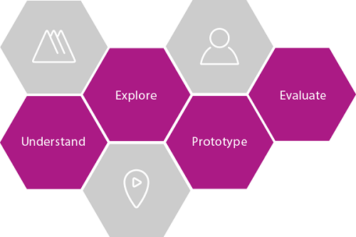

| Task: Ideation |
 |
|
| The purpose of this task is to develop the ideas for a new business solution, enabled by information technology. |
| Roles | Primary Performer: | Additional Performers: |
|---|---|---|
| Inputs | Mandatory:
| Optional:
|
| Outputs |
|
|
| Process Usage | ||
For a growing class of systems - Systems of Engagement - our clients are looking for a more collaborative and agile approach from IBM to understand and even jointly discover how technology can enable a compelling initiative for their business. For business clients in particular, an approach that is based solely on traditional IT artifacts may not connect readily with the vocabulary and context for the given business domain. In this task we choose to highlight the use of the IBM Design Thinking technique. You may choose to select another approach for Ideation based on your client’s culture or the specific domain of interest. You should particularly consider these leading capabilities, described in more detail in the Alternatives section below: – either can also be combined with the use of IBM Design Thinking:
The IBM Design Thinking approach is a major initiative in IBM for Product Management that injects a focus on the Design of Software Products and Offerings. Elements of IBM Design Thinking are also relevant to Services teams with expertise in User Experience design. In this task, the objective is to explore with the client Ideas for how a business solution, leveraging information technology, can meet their objectives for a specific initiative. The recommended approach to Ideation is to apply a subset of IBM Design Thinking during the technical sales process. There is particular value to our business clients in this approach as it focuses more on the business outcomes and customer experience they want to achieve with their offerings to the market. IBM Design Thinking documentation (primer and fuller guide) is available here.  IBM Design Thinking has three core practices - Hills, Sponsor Users and Playback. You may want to leverage Playback in an initial delivery engagement. From a technical sales perspective, during Ideation, your focus should be on Hills and Sponsor Users. For a broader view of the use of Design Thinking in Technical Sales consult the guidance paper referenced in this task.
IBM Design Thinking would typically take several workshops to Understand and Explore a solution with a client. For the purpose of this task, we assume that the client has agreed to a 4 hour workshop during the presales discussions. Each situation will vary, but general guidance suggests that more investment in exploring a solution design with a client would require deeper specialist skills in user experience design and an initial contract. This Ideation task begins with a client discussion where you offer the option of a Design Thinking workshop to your Client. This may require an introduction to the IBM Design Thinking approach and its successes to date with IBM products. Once they have agreed, then you can work with them to plan and perform the workshop and communicate the results. Establish interest and momentum from the Ideation Workshop in order to |
|
Plan the Workshop with your Client
Secure the IBM Expertise Needed for Success
Begin the workshop with a Clear Context
Define the Set of Personas
Develop the As Is Experience Map and an Empathy Map
Sketch Areas of the Desired State and Review
Following the Workshop, Review the Results of the Ideation Session
Next Steps
|
In some cases - for example a formal Request for Proposal from a client - such a joint session may not be permitted by the client's procurement process. In other cases, such as a mission critical System of Record, a more formal specification of a system will be appropriate. In those situations, proceed to the Define Project task in TeamSD. The client may be interested in IBM Design Thinking and some introduction of the concepts should be provided before the Ideation Workshop, but keep the focus on the business initiative and use Design Thinking as the means to gain insight, not the subject of the technical sale. |
Depending on the opportunity, you may wish to explore other approaches that can demonstrate IBM thought leadership and bring differentiated value to your client's initiative. IBM Client Centers To advance an opportunity and demonstrate IBM industry, research and/or technology differentiation, consider using an IBM Client Center. There are two styles of Client Center – those with an industry solution focus and others where a client can see more of the art of the possible from IBM Research. The Global Industry Solution Centers provide a custom briefing location where you can plan a Client briefing to showcase industry solutions and plan creative engagements to advance a client's initiative, e.g exploring via a Proof of Concept. THINKLab matches IBM Research's innovation capabilities with our leading clients' industry expertise to tackle challenges that do not currently have a defined solution. Innovation Thinking
Consult this Innovation Thinking wiki for information on the range of innovation workshop approaches that have
been developed and used with clients. You may use an Innovation Workshop in this task to Ideate on an overall innovation theme and identify a set of tangible prioritised ideas and actions to take forward, including the solution design for the prioritized initiatives. You will see other types of workshop also listed. These provide the ability to have a range of approaches which can be applied in different ways depending on context. |
| Guidelines | |
|---|---|
| Supporting Materials |
| Change Date | Tue Oct 06 12:48:39 IST 2015 |
|---|
© Copyright IBM Corp. 1987, 2016 All Rights Reserved |